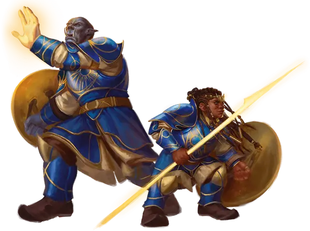

Рыцарь Солнечного бастиона
Solar Bastion Knight
Средний Гуманоид (Паладин), нейтрально-добрый

Класс Доспеха 20 (латы, щит)
Хиты 150 (20к8 + 60)
Скорость 30 футов
| мод | спас | ||
|---|---|---|---|
| СИЛ | 18 | +4 | +4 |
| ЛОВ | 10 | +0 | +0 |
| ТЕЛ | 17 | +3 | +3 |
| мод | спас | ||
|---|---|---|---|
| ИНТ | 15 | +2 | +2 |
| МДР | 16 | +3 | +7 |
| ХАР | 17 | +3 | +7 |
Навыки История +6, Магия +6
Иммунитет к состояниям испуг, ослепление, очарование
Чувства пассивное Восприятие 13
Языки Общий, плюс один любой язык
Опасность 9 (5000 опыта)
Бонус мастерства +4
Особенности
Аура защиты. Рыцарь и каждый союзник в пределах 10 футов от него с преимуществом совершают спасброски. Эта особенность подавляется, пока рыцарь находится в недееспособном состоянии.
Действия
Мультиатака. Рыцарь совершает три атаки Солнечным копьём.
Солнечное копьё. . Рукопашная или Дальнобойная атака оружием: +8 к попаданию, досягаемость 5 футов или дистанция 120 футов, одна цель. Попадание: 14 (3к6 + 4) урона излучением или 21 (5к6 +4) урона излучением если цель Исчадие или Нежить.
Солнечная вспышка (перезарядка 5-6). Рыцарь высвобождает вспышку ослепительной энергии, которая заполняет сферу радиусом 30 футов с центром на рыцаре. Каждое существо по выбору рыцаря в этой области должно совершить спасбросок Ловкости Сл 15. При провале существо получает 22 (4к10) урона излучением и становится ослеплённым до конца своего следующего хода. В случае успеха существо получает только половину этого урона. В течение следующей минуты пораженный участок заполняется ярким светом, считающийся солнечным.
Использование заклинаний. Рыцарь накладывает одно из следующих заклинаний, не нуждаясь в материальных компонентах, используя Харизму в качестве базовой характеристики (Сл спасброска заклинания 15):
• 1/день: высшее восстановление [greater restoration], послание [sending], слово возврата [word of recall] (подготовленное святилище - Солнечный бастион)
Описание
Рыцарь Солнечного бастиона, представленный здесь, является примером члена организации.